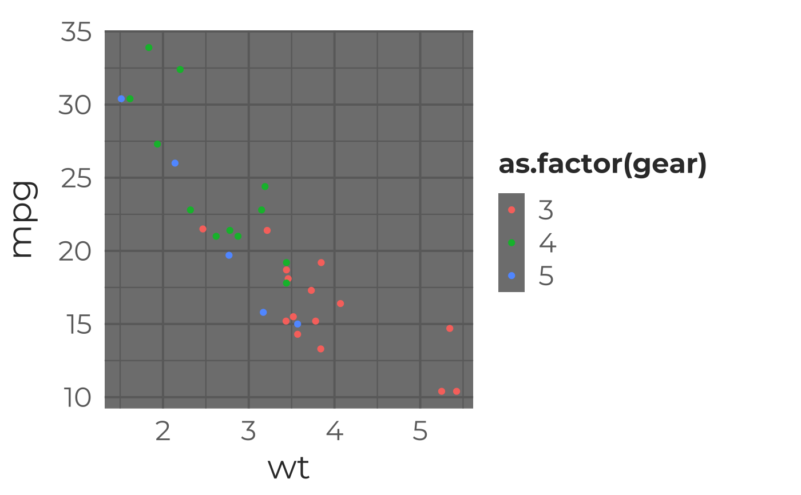
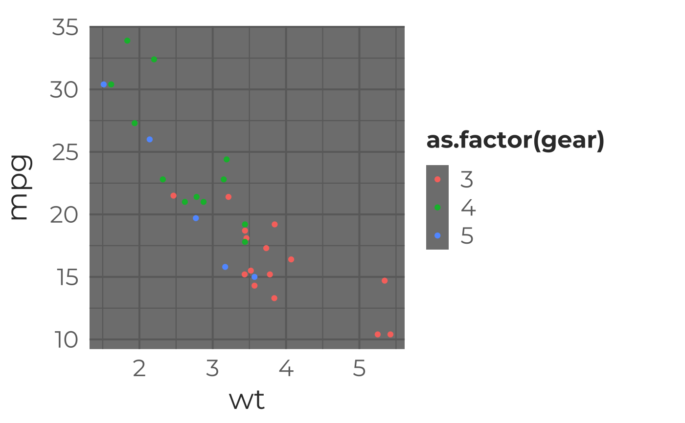
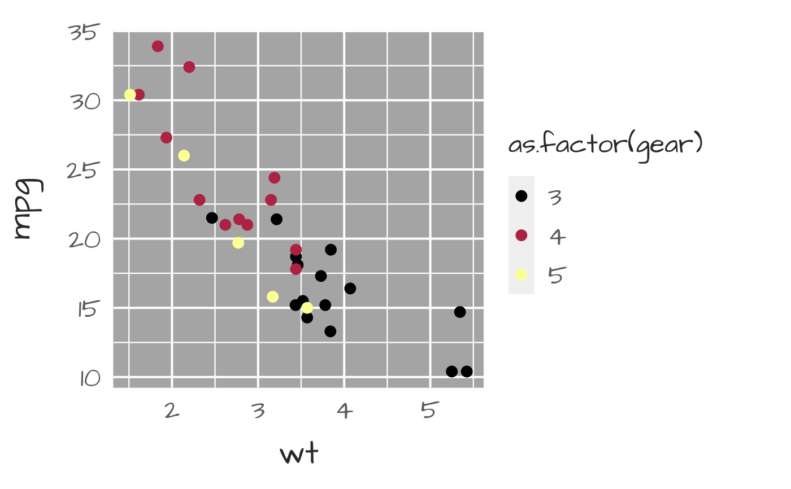
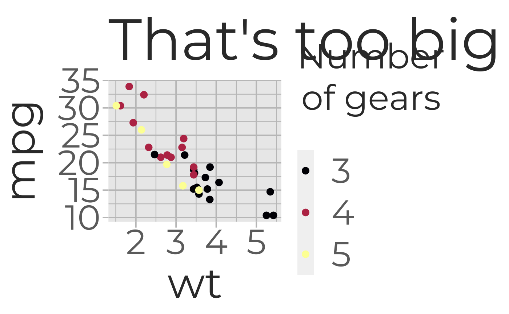
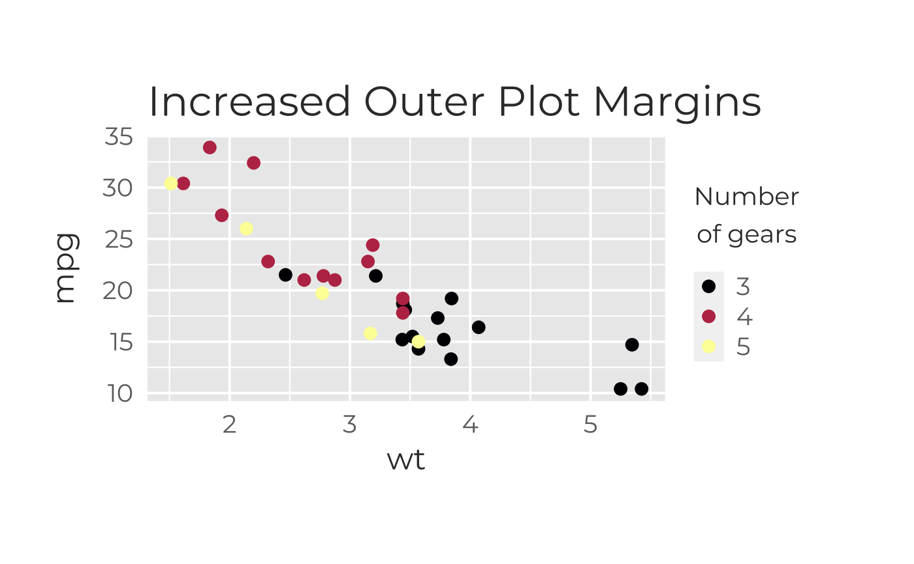
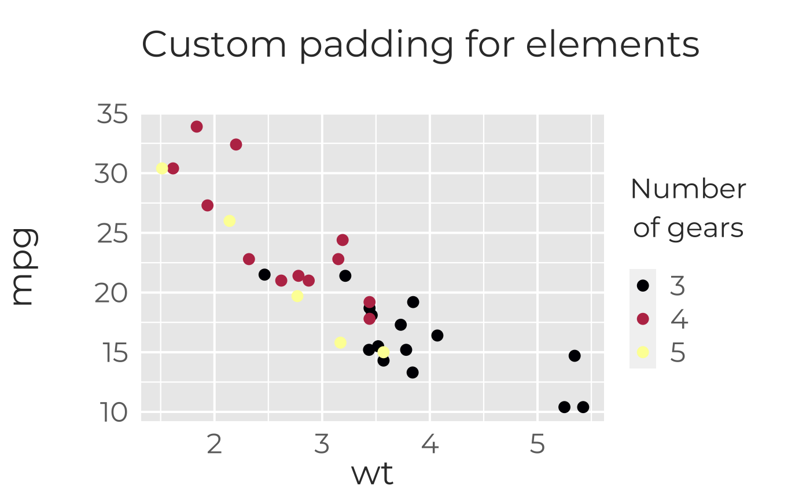
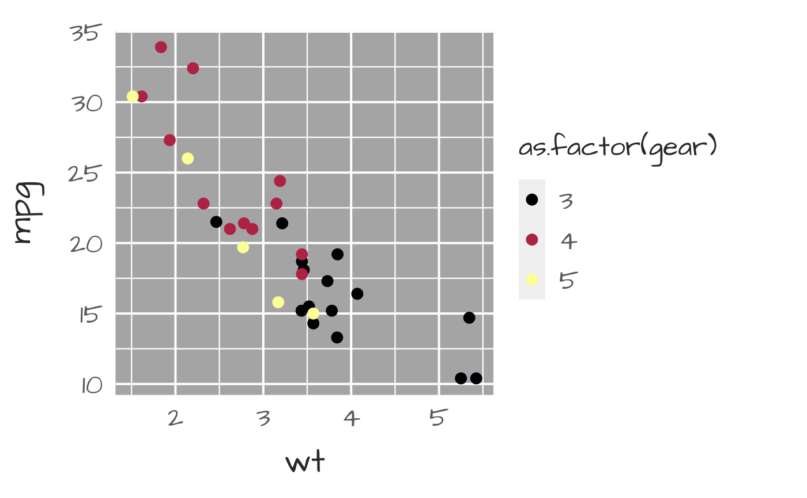
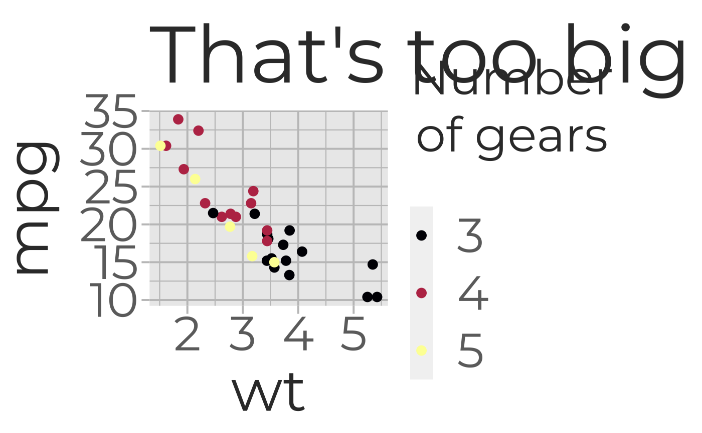
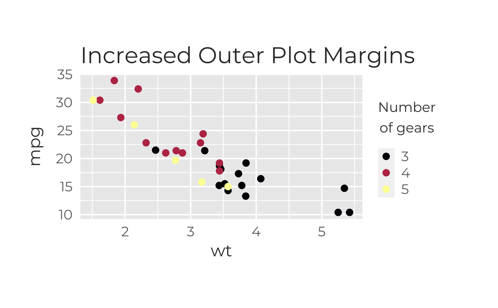
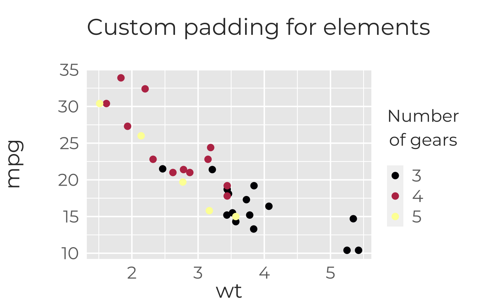

A ggplot2 theme for Galactic Polymath styling. Sensible defaults for plots intended for presentations and worksheets. (Large text, thick grid lines, etc.)
theme_galactic(
base.theme = "gray",
grid.wt.maj = 0.7,
grid.wt.min = 0.4,
grid.col = NA,
bg.col = NA,
border.wt = 1,
border.col = "#6D6D6D",
font = "Montserrat",
regular.wt = 400,
bold.wt = 700,
text.cex = 1,
font.face = 1,
title.col = "#363636",
axis.lab.col = "#363636",
axis.text.col = "#6D6D6D",
axis.tick.length = 6,
pad.title = 5,
pad.xlab = 5,
pad.ylab = 12,
pad.legend = 0,
pad.outer = c(20, 5, 5, 5)
)Arguments
- base.theme
ggplot2 base theme to be modified; default="gray"; other options are "bw","light","linedraw", "dark","minimal","classic" and "void" as listed in this gallery
- grid.wt.maj
How heavy do you want grid lines to be? (in case printer makes things lighter); default=.8
- grid.wt.min
How heavy do you want grid lines to be? (in case printer makes things lighter); default=.6
- grid.col
What color do you want the grid to be? Default: NA (maintain base theme); options are "gp_gray" or any custom color
- bg.col
Background color for plot area; default=NA (base theme default)
- border.wt
How heavy do you want the plot border to be?
- border.col
Color of plot border. Default: same as font (#363636)
- font
Google font to use, "Montserrat" by default; see options with sysfonts::font_families_google() or the Google font gallery
- regular.wt
font weight for regular font style
- bold.wt
font weight for bold text
- text.cex
Controls size of text; if a single value, a simple multiplier for scaling all text; if 4 values, a multiplier for title, axis labels, axis values, and legend title; default=1 (don't rescale font sizes)
- font.face
style of axis label and title fonts; 1=plain, 2= bold, 3=italic, 4=bold+italic; Provide 1 value for all or 3 values for title, x-axis label, y-axis label (in that order); default= 1 (plain)
- title.col
color of title and subtitle (if present)
- axis.lab.col
color of axis labels
- axis.text.col
color of axis text (numbers, dates, etc)
- axis.tick.length
length of axis ticks (in pt units)
- pad.title
padding between title and plot; default=5 in "pt" units
- pad.xlab
padding between x-axis values and x label; default=5 in "pt" units
- pad.ylab
padding between x-axis values and x label; default=12 in "pt" units
- pad.legend
padding between legend title and key; default=0 in "pt" units
- pad.outer
set outer plot margins; default= c(20,5,5,5) for top, right, bottom, left in "pt" units
Examples
require(ggplot2)
#default plotting
(g<-ggplot(mtcars,aes(wt,mpg,col=as.factor(gear)))+geom_point())
 #add ggplot themeing (intended to look good and be readable by
#data novices in printed & projected formats)
g+theme_galactic()
#change the base theme
g+theme_galactic(base.theme="dark")

#doesn't look great, let's change the palette to a color-blind-friendly
#Viridis theme (and the font while we're at it)
g+theme_galactic(font="Architects Daughter" )+
scale_colour_viridis_d(option="inferno")+geom_point(size=3)
#add ggplot themeing (intended to look good and be readable by
#data novices in printed & projected formats)
g+theme_galactic()
#change the base theme
g+theme_galactic(base.theme="dark")

#doesn't look great, let's change the palette to a color-blind-friendly
#Viridis theme (and the font while we're at it)
g+theme_galactic(font="Architects Daughter" )+
scale_colour_viridis_d(option="inferno")+geom_point(size=3)
 #Still not happy with the contrast...somewhere between the grays we've tried
(g2 <- g+theme_galactic(font="Architects Daughter",bg.col="gray70")+
scale_colour_viridis_d(option="inferno")+geom_point(size=3))

#let's add a title and change the legend title
(g3 <- g2+
labs(title="What a good lookin' plot", col=expression(atop("Number","of gears")),parse=TRUE))
#Make all the text bigger with one multiplier (useful for quickly scaling
#for a different output size)
g3+theme_galactic(text.cex=2,grid.col="gp_gray")+ggtitle("That's too big")

# Note we lost all our customizations because we overwrote our theme.
#Add more space to the right side of the margin
g3+theme_galactic(text.cex=0.8,pad.outer=c(50,40,50,30))+ggtitle("Increased Outer Plot Margins")

# Change the size of each type of text
g3+theme_galactic(text.cex=c(0.6,1.1,0.5,1.2))+labs(title="60% Title Text Size",
y="Axes are 110% Text Size", x="↑ Axis Values 50%↑ ",col="120% Legend\nText Size")
# Change padding between text labels and graph elements
g3+theme_galactic(text.cex=c(.8,1,1,1),pad.title=30,
pad.xlab=0,pad.ylab=35,pad.legend=0)+ggtitle("Custom padding for elements")

#Still not happy with the contrast...somewhere between the grays we've tried
(g2 <- g+theme_galactic(font="Architects Daughter",bg.col="gray70")+
scale_colour_viridis_d(option="inferno")+geom_point(size=3))

#let's add a title and change the legend title
(g3 <- g2+
labs(title="What a good lookin' plot", col=expression(atop("Number","of gears")),parse=TRUE))
#Make all the text bigger with one multiplier (useful for quickly scaling
#for a different output size)
g3+theme_galactic(text.cex=2,grid.col="gp_gray")+ggtitle("That's too big")

# Note we lost all our customizations because we overwrote our theme.
#Add more space to the right side of the margin
g3+theme_galactic(text.cex=0.8,pad.outer=c(50,40,50,30))+ggtitle("Increased Outer Plot Margins")

# Change the size of each type of text
g3+theme_galactic(text.cex=c(0.6,1.1,0.5,1.2))+labs(title="60% Title Text Size",
y="Axes are 110% Text Size", x="↑ Axis Values 50%↑ ",col="120% Legend\nText Size")
# Change padding between text labels and graph elements
g3+theme_galactic(text.cex=c(.8,1,1,1),pad.title=30,
pad.xlab=0,pad.ylab=35,pad.legend=0)+ggtitle("Custom padding for elements")
